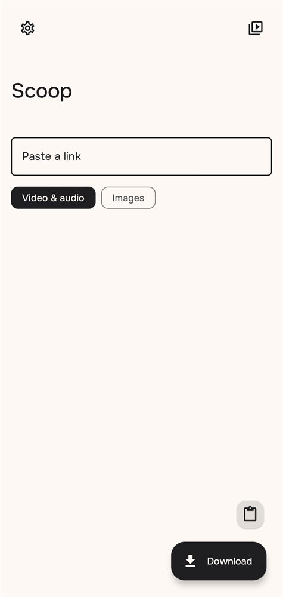
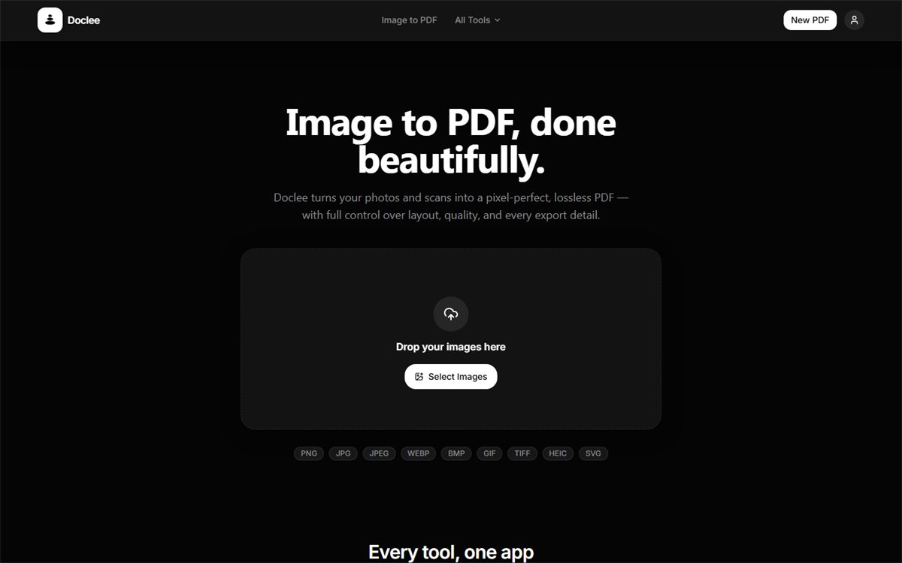
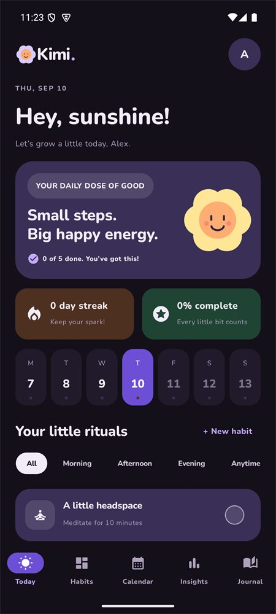

VAIBHAV SEN
Developer & UI/UX Designer
Scoop
Your media. Your device.

Doclee
Powerful PDF tools. Private by design.

Budgie
A clearer picture of your subscriptions.
B
Kimi
Small rituals. A brighter every day.

Designed
with intent.
Built with
care.
LET’S TALK ✦ LET’S TALK ✦